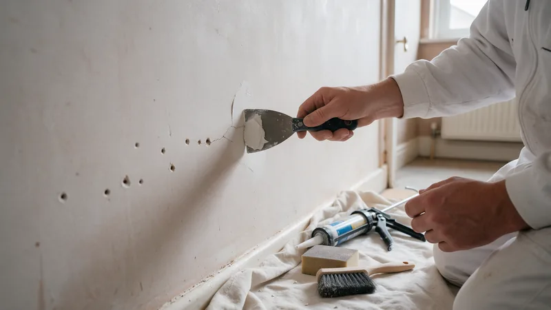
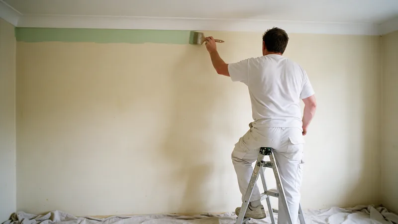

Home / Services / Interior painting
Interior painting
Interior painting.
Walls, ceilings, and the bits either side of them. Filled, caulked, sanded and dusted off first, then two thin coats laid off the same way, with the cutting in kept wet so the brush and the roller blend instead of framing the wall.
Where the finish actually comes from
Paint is thin. It is a film a fraction of a millimetre thick, and it does not hide anything. It lights things up. Every hook hole, every dent, every ridge of old filler and every dark gap along the skirting is still there under a fresh coat, and the first good low light of the afternoon will find all of them.
So the day you are paying for is the one before. Holes and dents filled, old paper and loose paint off, the whole lot sanded flat, every gap along the skirting, the architrave and the coving run with caulk so there is no shadow line left, and then the dust taken off with a brush and a damp cloth rather than left for the paint to stick to. By the time the first coat goes on, the room already looks better.
The order, and why it is always the same
Ceilings first, because anything that spatters lands on walls that have not been done yet. Then walls. Then woodwork last, because woodwork is the fiddly bit and it is easier to cut a crisp line against a finished wall than to protect a finished skirting from a roller.
Cutting in gets done just ahead of rolling rather than the night before, so the brushed edge is still wet when the roller reaches it. That is the whole trick behind a wall that looks like one surface instead of a rolled middle with a brushed frame round it. If you have ever seen a wall with a visible band round the edges, that is what happened.
Choosing colour, honestly
A colour card in a shop is lying to you, not on purpose, but because it is being seen under a different light next to a hundred other colours. The same shade in a north facing room and a south facing room is not the same shade. Under a warm lamp at night it is different again, and that is the light most living rooms are actually used in.
Get a tester, paint a decent patch of it on a piece of lining paper rather than straight on the wall, and move that piece round the room over a day. Look at it in the morning, at four in the afternoon and with the lamps on. It takes a day and it saves a repaint.
 Generated photo
Generated photoGenerated for this demo. Not a photograph of a real job.

Generated photoThe day nobody photographs, and the one that decides what the room looks like in six months.
Colour
One colour, three lights.
The same shade, drawn as it reads in a north facing room, a south facing room and under a lamp at night. This is what a tester pot is actually for.
Drawn in the browser rather than photographed. Your room will do its own version of this, which is why a patch on a piece of lining paper moved round the room beats any card.
On the job
How this one usually goes.
- Sheets, masking and everything off the wallsFloor sheeted and taped at the skirting, furniture moved and covered, switch plates, socket plates, handles and curtain fittings off rather than painted round.
- Wash down and make goodGrease and old marks washed off, loose and flaking paint scraped back, holes and dents filled, cracks opened and filled properly rather than smeared over.
- Caulk and sandEvery gap along the skirting, the architrave and the coving run with caulk and wiped, then the filler sanded flat and the woodwork keyed. Dust off with a brush and a damp cloth.
- First coat onA mist coat on anything new, a primer or stain blocker where the surface needs it, or a first full coat where it does not. This is the coat that does the work.
- Second coat, then the room backCutting in kept wet ahead of the roller, laid off the same way across the wall. Then plates and handles back on, sheets up, floor swept and the room put back.
A sample running order for this demo. Yours depends on the property and what the surfaces turn out to be doing.
Questions
Asked about this job.
How many coats do I get?
Two on everything as standard, on top of whatever first coat the surface needs. One coat is not a cheaper version of two, it is a different and worse thing, and it shows most in a side light and on anything you are covering.
Can you go straight over a dark colour?
Not sensibly in two coats of a pale shade. Dark reds, deep blues and strong greens need an undercoat or a tinted coat first, or you end up with three and four coats of top paint doing a job a cheaper coat should have done.
Do you paint the ceiling as well?
If it needs it, and it usually does. A fresh wall next to an old ceiling makes the ceiling look grey, and once you have seen it you cannot stop seeing it. We will say at the quote whether it is worth doing both.
What about the radiators and behind them?
We will paint behind a radiator as far as a radiator roller reaches, which gets the visible part. Taking radiators off is a plumbing job rather than ours. If one is coming off anyway, tell us and we will work round that date.
Can you do it while I am living there?
Yes, and most of our work is exactly that. One room at a time, the room put back at the end of each day where we can, and a plan for where everybody sleeps if it is a bedroom. It is slower than an empty house, and we will say so in the quote rather than afterwards.
General trade knowledge written for this demo, not advice on your property.
Our work
Sample jobs like this.

Generated photoCutting in the first wallLytham St Annes · SampleGenerated photoLaying off a long wallPoulton-le-Fylde · Sample Generated photoHall, stairs and landingKirkham · Sample
Generated photoHall, stairs and landingKirkham · SampleMade up samples with generated pictures. Tap one for the detail.
Also
The other things we do.
Exterior painting
Render, pebbledash and masonry out front, and the timber that holds it all together. Done in the right months, on a dry wall, in the right order.
More →Wallpaper hanging
One feature wall or a whole room. Lining where the wall needs it, plumbed off a line rather than off the corner, and patterns matched at every seam.
More →Woodwork and doors
Skirtings, architraves, window boards, spindles and doors. Sanded flat, knotted and primed where it is bare, then brushed so you cannot find the laps.
More →Kitchen cabinet painting
Doors off, degreased, keyed, primed for the surface they actually are, then two thin coats. A new looking kitchen without a new kitchen.
More →Commercial and rental refreshes
Empty flats, offices, salons and holiday lets. Worked round the keys and the cleaners rather than round us, and left ready to photograph.
More →Shall somebody come and look at it?
Tell us which rooms and your postcode. Twenty minutes with a light held along the wall tells us more than any photograph.